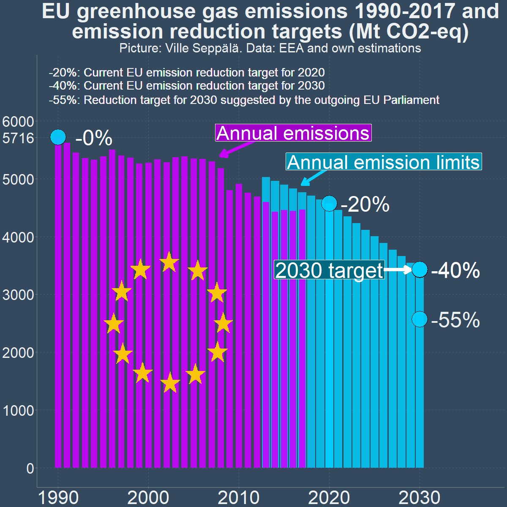
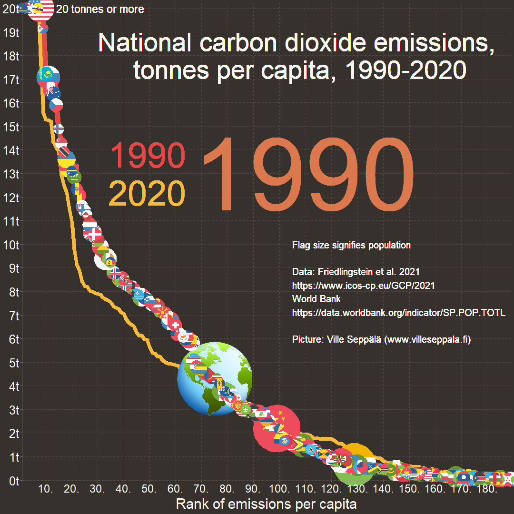
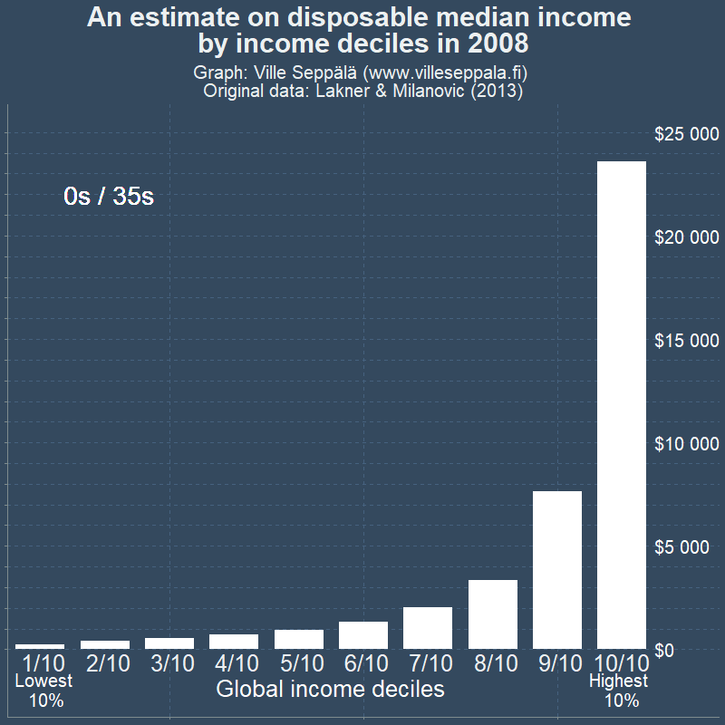

Hiilen hinnoittelu -videosarja
Projekti ja sen motivaatio
Tavoite ja toteutus
Haluan toteuttaa yhteispituudeltaan noin 1-2 tunnin mittaisen videosarjan hiilen hinnoittelusta keinona ilmastonmuutoksen torjumisessa. Projektissa yhdistetään taloustieteen teoriaa, audiovisuaalista tarinankerrontaa ja tosimaailman esimerkkejä. Lue videoiden sisällöstä “Luonnos videosarjan sisällöstä” -osiosta.
Videot koostuisivat pääosin animaatioista ja infografiikoista sekä äänikerronnasta. Videoissa hyödynnetäänkin “kuva kertoo enemmän kuin tuhat” -periaatetta ja vältetään “puhuva pää” -toteutustapaa.
Videot toteutaan suomeksi ja englanniksi. Englanninkielisistä versioista jätetään pois Suomi-spesifejä osioita. Koodipohjainen, etenkin R-ohjelmointikielellä toteutettu video mahdollistaa samojen animaatio- ja graafikoodien käyttämisen eri kieliversioissa, siten että vain niihin sisällytettyä tekstiä/ääntä tarvtisee muuttaa.
Videot ladattaisiin Youtubeen ja mahdollisesti joihinkin muihin videopalveluihin (Vimeo yms). Niistä voidaan myös tehdä lyhyitä teasereita somepalveluissa jaettavaksi.
Hankkeen kesto olisi n. 9-12 kuukautta n. 75% osa-aikaisella työajalla.
Motivaatio
Minua motivoivat videosarjan toteuttamiseen muun muassa nämä tekijät:
- Ilmastonmuutoksesta ylipäätään ei ole nähdäkseni ole juurikaan houkuttelevasti tuotettua kotimaista videosisältöä. Kansainvälisesti laadukasta sisältöä on paljon, mutta siinäkin päästöhinnoitteluun keskittyvistä videoista on puute.
- Päästöhinnoittelun tehokkuutta ja sen automaattista toimintamekanismia ei välttämättä sisäistetä, ja niistä viestiminen on siksi tärkeää. Päästöhinnoittelua pidetään etenkin taloustieteilijöiden keskuudessa hyvin tehokkaana päästövähennyskeinona, ja videoiden keskeinen tarkoitus on kansantajuistaa aihetta. Toisaalta osalla saattaa olla liiankin positiivinen näkymä hiilen hinnoittelun kaikkivoipaisuudesta. Videosarjassa tuodaan esiin myös sen heikkouksia.
- Nykyisen päästöhinnoittelun mittakaavaa on hankala hahmottaa. Esimerikksi päästökaupan päästöoikeuksin hinta (nyt noin 80 euroa per tonni) ei kerro paljoa, kun tonnimäärät eivät välttämättä tuttuja, saati että kuinka suurta/pientä osaa päästöistä päästökauppa koskee. Sama kotimaisten päästöverojen osalta. Uskon, että moni yliarvioi päästöhinnoittelusta itselleen koituvat kustannukset.
- Videoiden on tarkoitus olla pääosin yleismaailmallisia ja ajasta riippumattomia. Keskityn kuitenkin joissain videoissa ajankohtaisiin ilmastopolitiikan rakenteisiin Suomessa, EU:ssa ja globaalisti. Ne toimivat paitsi kerrontaa hyödyttävinä esimerkkeinä niin varsinkin julkaisuhetkellä antavat myös näkemyksen ajankohtaisiin kehityksiin.
Pätevyyteni projektiin
CV: https://villeseppala.wordpress.com/cv/
Muut tämänhetkiset kiinnostukseni: https://villeseppala.github.io/interests/
Työ- ja vapaaehtoiskokemus
Minulla on tohtorintutkinto taloustieteestä, mikä auttaa ymmärtämään hiilen hinnoittelun teoreettista taustaa.
Olen työskennellyt ilmastonmuutos-teeman parissa aiemmin:
Valtiontalouden tarkastusvirasto marraskuu 2023-joulukuu 2025. Ilmastonmuutoksen tietoperustan tarkastus, joka kesti koko määräaikaisuuteni ajan. Tarkastuksessa arvioitiin, että saavatko päättäjät tarpeeksi tietoja päästövähennystoimien vaikuttavuudesta ministeriöistä heidän valmistellessaan ilmastopolitiikan suunnitelmai. Olin tarkastuksessa johtava tarkastaja.
Euroopan parlamentin tutkijapalveluiden työllistämänä ajoittain vuodesta 2020 alkaen. Olen tehnyt graafeja jäsenmaiden ilmastotilastoista etenkin europarlamentaarikkojen käyttöön tuleviin raportteihin.
Apurahatyöntekijänä Koneen säätiön apurahalla vuosien 2022 ja 2023 vaihteessa. Tein sovelluksen globaalin hiilen hinnoittelun ja hiiliosingon tulonjakovaikutuksista: https://globalcarbonprice.com/
Olen myös ollut Vihreiden ilmasto- ja energiatyöryhmän jäsenenenä vuodesta 2021 alkaen.
Tekninen osaaminen ja aiempi tuotanto
Videot toteutetaan R-ohjelmointikielellä ja sen laajennuksilla. Olen aiemmin tehnyt dashboard-sovelluksia R:n shiny-laajennuksella (mm. yllä mainittu globalcarbonprice.com) ja animaatioita gganimate-laajennuksella. Sekä animaatioissa, dashboardeissa että myös staattisten kuvien teossa (esim. yllä mainitut EPRS:lle tuotetut kuvat) olen hyödyntänyt ggplot2-laajennusta graafien luomisessa.
Muutama esimerkki animaatioista, joita olen tehnyt aiemmin:



Portfolio-linkin takana esimerkkejä myös omalla ajalla tekemistäni kuvista: https://villeseppala.github.io/interests/portfolio
Olen tehnyt aiemmin ilmastonmuutos-aiheisia videoita youtube-kanavalleni omalla ajallani, tässä ehkä tärkeimmät:
Videoiden toteuttamisesta on vuosia aikaa, ja minulla on nyt parempi tietotaso ja tekninen osaaminen. Tavoitteena on yhdistää animaatioita videoihin paremmin, ja tehdä kerronnasta siten houkuttelevampaa ja soljuvampaa.
Minulla on käytössäni studiotasoinen mikrofoni hyvän äänenlaadun varmistamiseksi. Englanninkielisten videoiden äänen toteuttamiseen saatetaan palkata ääninäyttelijä osana apurahan käyttöä.
Luonnos videosarjan sisällöstä
Alla hyvin varhainen jaottelu tällä hetkellä mielessä olevista yksittäisistä aiheista. Nämä voisivat olla erillisiä videoita, tai niitä voitaisiin yhdistää yhdeksi tai useammaksi videoksi. Aiheita tulee myös varmasti mieleen lisää.
Yleiskatsaus videosarjaan
Lyhyt esittelyvideo, jossa käydään läpi videosarjan motivaatio, tavoitteet ja sisältö tiivistettynä.
Mitä hiilen hinnoittelu on ja mikä on hiilen hinnan ja päästöjen suhde?
Esitellään haittaverojen/haittamaksujen (Pigouvian taxes) konseptia yleisesti, esimerkkeinä esim. alkoholi- ja tupakkaverotus, joka ovat yleistä ympäri maailmaa. Tuo esiin haittaverojen normaaliutta, että miksi niitä on luonnollista soveltaa myös päästöihin.
Hiilen hinnoittelun tyyppejä: päästökauppa, hiilivero, hiilitullit. Käydään läpi päästökauppaa ja hiiliveroa toistensa kääntöpuolina. Hiiliverossa asetetaan hinta ja päästöjen määrä seuraa siitä - päästökaupassa asetetaan päästöjen määrä, ja hiilen hinta seuraa siitä. Periaatteessa eri hinta- ja päästötasojen yhteyden tulisi pysyä samana päästöhinnoittelun toteutustavasta riippumatta.
Visualisaoidaan päästövähennystoimien rajakustannuskäyrää (Marginal Abatement Curve (MAC)) suhteessa hiilen hintaan tai päästötavoitteeseen osoittamaan tasapainon muodostumista hiiliveron tai päästökaupan tapauksessa.
Hiilen hinnoittelu näkymättömänä mutta tehokkaana yleispäästövähennystoimena yhteiskunnan ja yksilön tasolla
Jatketaan rajakustannusäyrän kanssa ja katsotaan sitä yksityiskohtaisesti eri esimerkkipäästövähennystoimien osalta. Tuodaan esiin miksi päästöhinnoittelu on kustannustehokkaampaa kuin yksittäisten toimien valinta, mikäli halutaan osoittaa päästövähennyksiin tietty määrä resursseja tai mikäli tavoitellaan jotain tiettyä päästötasoa. Tämä etenkin siinä tapauksessa, että päästövähennystoimien hinta on epätäydellisesti tutkijoiden tai päättäjien tiedossa, mikä on hyvin realistinen tilanne. Hiilen hinnan hienous on, että kenenkään ei keskitetysti tarvitse tietää halvimpia päästövähennystoimia, vaan hintasignaali ohjaa niitä erillisesti tunnistavia toteuttamaan näitä toimia.
Tuodaan esiin miksi tämä pätee myös pienemmässä skaalassa, yritysten ja yksilöiden käytöksen tasolla. Esimerkiksi polttoaineiden kallistuminen päästöhinnoittelun seurauksena voi johtaa hyvin erilaisiin valintoihin yrityksestä riippuen - se mikä on millekin yrityksille edullisinta voi vaihdella huomattavasti. Myös yksilö voi valita, että mistä päästölähteistä juuri hänen on helpoin vähentää tai minkä ylläpidosta on valmis maksamaan. Sen sijaan että kiellettäisiin joko lentomatkat tai lihansyönti, niin päästöverolla voidaan päästä samaan kokonaisvähennykseen siten, että siitä koituu yksilöille kokonaisuutena pienempi haitta, koska se säilyttää yksilöillä paremmin valinnanvaraa toimia preferenssiensä mukaan.
Yksilöille ja yrityksille suuri osa päästövähennyksistä on kuitenkin näkymätöntä, kun esimerkiksi niiden käytössä oleva sähkö tai lämpö muuttuu automaattisesti vähäpäästöisemmäksi.
Hinnoittelun positiivinen dynamiikka
(Tämä osio yhdistetään luultavasti johonkin toiseen, mutta en ole vielä varma mihin)
- Päästöhinnoittelu edistää vähäpäästöisten ratkaisujen käyttöönottoa. Tämä lisää niiden mittakaavaetuja ja ylipäätään panostusta niiden kehittämiseen. Tämä tekee niiden käytön edullisemmaksi ja kilpailukykyisemmäksi suhteessa korkeapäästöisiin ratkaisuihin, jolloin ei tarvita yhtä korkeaa hiilen hintaa saman päästötason saavuttamiseen kuin ns. staattisessa mallissa, tai kääntäen: tietyllä hintatasolla saavutetaan staattista mallia matalammat päästöt. Tämän positiivisen noidankehän vaikutus voi olla kohtalaisen suuri. Nostetaan tässä esimerkkinä ainakin aurinko- ja tuulivoiman hintatason tippuminen niiden tuotannon kasvaessa. EU:n päästöhinnoittelu ollut osin auttamassa.
Synergioita ja vajeita, eli miksi tarvitaan muutankin kuin hiilen hinnoittelua?
Teknologian kehittymisellä on ollut iso rooli päästövähennyksissä. Monessa tapauksessa voi olla hyödyllistä ohjata taloudellista tukea teknologiakehitykseen tai demonstraatiohankkeisiin verrattuna siihen, että sama kehitys saavutettaisiin pääästöhinnoittelulla. Millekään yksittäiselle yritykselle ei välttämättä ole kustannusoptimaalista investoida tuotekehittelyyn korkeillakaan päästöhinnoilla, vaikka se olisi kustannusoptimaalia yhteiskunnan kannalta kokonaisuutena. Tällöin julkinen kehitystuki tai muu vastaava toimi on hyödyksi.
Ns. Lumipalloefekti voi vaatia alkutuuppausta, jos hintasignaali ei saa tarpeeksi muutosta aikaan, vaikka olisi se riittäisi ns. tasapainotilan mukaisesti. Esimerkiksi sähköautojen yleistymisessä tärkeää on ollut latausverkkojen kehitys. Kohdistettu tuki ensimmäisten latureiden rakentamiseen sai monet hankkimaan sähköauton, mikä on sitten tehnyt latureiden rakentamisen markkinaehtoisesti kannattavaksi yhdessä esim. polttoaineiden hiiliveron kanssa.
Esimerkiksi elintarvikkeiden osalta voi olla hankaluuksia päästöjen mittaamisessa. Onko hiilen hinnoittelu paras tapa?
Kaiken kaikkiaan hiilen hinnoittelu hyötyy synergioista joidenkin kohdistettujen päästötoimien kanssa, ja joskus on järkevä hyödyntää muitakin ratkaisuja.
Miten korkea hiilen hinnan tulisi olla?
Katsotaan eri läheystymistapoja:
Päästötavoitteeseen vaadittava hiilen hinta. Asetetaan tavoite, esimerkiksi globaalilla tasolla 2 asteen lämpenemisen alla pysyminen tai Suomen tasolla 2035-hiilineutraaliustavoite. Asetataan hiilen hinta riittävän korkeaksi (yhdessä mahdollisten muiden toimien kanssa), että päästötavoitteeseen päästään. Päästökaupan kautta toteutettuna hiilen hinta
Hiilen hinnoittelun haittojen (taloudellisten kustannusten kasvu, kilpailukykyhaitat) ja hyötyjen tasapainon mukainen hinta = Rajakustannuskäyrän ja rajahyötykäyrän leikkauspiste. Molempia on toki hankala arvioida. Käydään läpi Social Cost of Carbon -konseptia ja -arvioita ja suhteutetaan niitä nykyisiin päästöhintoihin. SCC pyrkii euromääräistämään lisäisen päästötonnin haitan - optimissa hiilen hinta asetetaan vastaamaan tuota lukua.
Keihin hiilen hinnoittelun haitat ja hyödyt kohdistuvat eniten?
Hiilen hinnoittelun vaikutusten kohdistuminen on melko moniulotteinen teema.
Hiilen hinnoittelu ei erottele päästölähteitä välttämättömyys-luksus-skaalalla tai päästölähteiden muita haittoja huomioiden. Intuition mukaan esimerkiksi lentomatkojen päästöihin olisi reilua kohdistaa enemmän vähennyspainetta kuin lämmityksen päästöihin. Tämä on huomioitava varsinkin, kun luksustuotteiden kuluttajat ovat hyvätuloisempia. Onko päästöhinnoittelun vaikutus hyvätuloisten käytökseen ylipäätään vähäisempää? Miten suurta ohjausvaikutus on eri tuloluokissa?
Ovatko päästöverot ja muut maksut luonteeltaan regressiivisiä vai progressiivisia, eli kohdistuvatko ne tulotasoon suhteutettuna enemmän pieni- vai suurituloisiin? Miten tämä eroaa tarkasteltaessa globaalisti ja Suomen tasolla? Miten paljon esimerkiksi sähköautoistuminen on muuttanut tilannetta, jos hyvätuloisimmilla on paremmat mahdollisuudet sähköautojen hankintaan?
Voidaanko tulonsiirroilla (esim. hiiliosinko tai EU:n sosiaalinen ilmastorahasto) lievittää mahdollisia tulonjakohaittoja? Mihin päästöhinnoittelun tulot menevät nyt ja miten se vaikuttaa tulonjakoon?
Hiilen hinnoittelun heikkous veronkeruutapana on, että veropohja murenee sitä mukaa kun hinnoittelu edistää päästöjen vähentämistä. Suomessa ajankohtaista etenkin liikenteen verotuksen osalta. Heikentää mahdollisuuksia ohjata päästöhinnoittelun tuloja pienituloisille.
Edelliseen liittyen esitellään verotuksen hyvinvointitappio (deadweight loss of taxation) eli miksi verotus ei ole yhteiskunnan tulojen kannalta nollasummapeliä, vaan vähentää taloudellista toimeliaisuutta ja kulutusta, kun verotettava toiminta väheneee - hiilen hinnoittelun tapauksessa tämän vähenemisen haittaa tulee tasapainottaa sen hyötyyn, eli ilmastonmuutoksen torjuntaan. Nämä kaksi viimeistä osiota voivat hyvin olla jossain toisessakin kohtaa.
EU:n päästökauppajärjestelmä(t)
Käydään läpi EU:n päästökauppajärjestelmää yleisestä tasosta (päästökaupan perusperiaatteet) yksityiskohtaisempaan tasoon, ja päästökaupan viimeaikaisiin (mm. CBAM eli hiilirajamekanismi) ja ehdotettuihin muutoksiin.
Suomi EU:n päästökauppajärjestelmän hyötyjänä. Teollisuus ja energiamarkkinat vähentäneet paljon päästöjään. Päästöoikeustulot jaetaan jäsenmaille hyvin vanhojen päästöjen perusteella, joten olemme nettohyötyjiä (ainakin ilman ym. deadweight lossin huomioimista).
Liikenteen ja lämmityksen päästökauppa (ETS-2) alkamassa EU:ssa. Se on on herättänyt vastustusta, ja tulee herättämään vielä enemmän, kun se lopulta käynnistyy. Jäydään läpi järjestelmää. EU:ssa on myös käynnissä ehdotuksia “alkuperäisen” päästökaupan (ETS-1) lieventämiselle eri tavoin. ETS-1:n lieventämisen kohdalla ei välttämättä sisäistetä, että se vähentää myös EU:n hiilirajamekanimista saatavia tuloja.
EU ja kansalliset päästöyksiköt
Tämä osio yhdistetään mahdollisesti sivumaininnaksi edelliseen. Voidaan jättää kokonaan välistä, jos vaikuttaa että järjestelmä ei ole käytössä kaudella 2030-2040.
- EU:ssa on ollut käynnissä järjestelmä, jossa jäsenmaat voivat hankkia toisiltaan päästöyksiköitä taakanjako- ja maankäyttösektoreilla päästötavoitteissa pysymiseksi
- Kirjoitin aiheesta osana VTV:n syksyn 2025 finanssipolitiikan valvonnan raporttia, sivu 77 alkaen: https://vtv.fi/raportti/finanssipolitiikan-valvonnan-raportti-2025/
- Järjestelmä tuntuu olevan heikosti tiedossa. Se voi kuitenkin tehostaa päästövähennysten kustannustehokasta jakaantumista jäsenmaiden välillä. Päästöyksiköiden hinta voi toimia signaalina jäsenmaiden hiiliverojen tasolle.
Globaali hiilen hinnoittelu - tilanne ja mahdollisuudet
Käydään läpi hiilen hinnoittelun kehitystä ja tilannetta globaalissa mittakaavassa. Miten suuri osa maista on omaksunut hiilen hinnoittelun jossain muodossa, ja miten hiilen hintataso on keskimäärin kehittynyt?
Miten globaali päästöhinnoittelua yritetään edistää tai voisi edistää. EU:n hiilitullit eli hiilirajamekanismi (CBAM, Carbon Border Adjustment Mechanism) osana tätä.
Suomi yhtenä mahdollisen globaalin hiilen hinnoittelun selkeistä edunsaajista. Päästöt/BKT-suhteemme on maailman matalimpia, joten haitta taloudellemme olisi huomattavan pieni, ja kilpailukykyknäkökulmasta olisimme voittajia.
Globaali hiilen hinnoittelun ja hiiliosingon tulonjakovaikutukset. Käydään läpi https://globalcarbonprice.com/ -sivuni kautta. Osa projektista käytettääisiin sivuston tekemiseen soljuvammaksi, myös jotta sitä voisi käyttää paremmin videon tukena. Keskimäärin köyhimmät voittaisivat, koska heillä keskimäärin pienimmät päästöt. Tämä ei huomioi deadweight lossia, mutta senkin kanssa varmaan pätee. Katsotaan potentiaalisia tulonjakovaikutuksia eri mm. päästötavoitteilla, niihin vaadittavilla hillen hinnoilla, keskipäästöjen yhdentymiskertoimilla ja sillä miten osa yhdessä maassa kerätyistä tuloista kohdistetaan globaaliin pottiin.